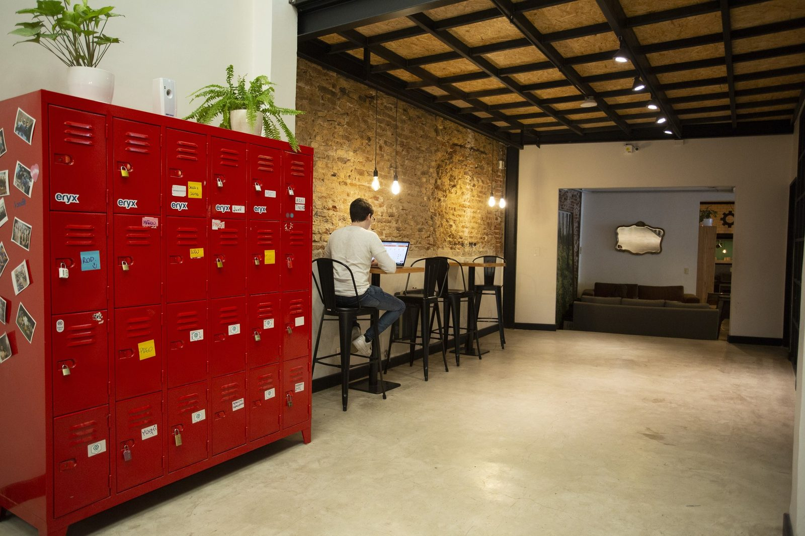

Software · Empleo
El software argentino frenó la creación de empleo: perdió 549 puestos en el primer semestre y la demanda pasó a ser el principal problema
El reporte de octubre de 2026 de la Cámara de la Industria Argentina del Software (CESSI) y del Observatorio Permanente de la Industria del Software (OPSSI) registra 162.708 empleos al segundo trimestre. Las exportaciones siguen en alza, pero las empresas describen un mercado más selectivo y señalan el impacto de la inteligencia artificial.

La industria argentina del software, que durante una década lideró la creación de empleo registrado, detuvo ese impulso en la primera mitad de 2026. Así lo indica el Reporte de la Industria del Software en Argentina al 1° semestre de 2026, de la CESSI y el OPSSI, con datos de la Subsecretaría de Industria y Economía del Conocimiento, del Ministerio de Economía.
Al segundo trimestre, el sector alcanzó 162.708 puestos registrados. El aumento trimestral del 0,2% —261 empleos— no compensó la caída del 0,5% del primer trimestre. El semestre cerró con una baja neta de 549 puestos (0,3%), en sintonía con el empleo privado registrado, que retrocedió 0,9% en la serie desestacionalizada.
Una década de expansión que se detuvo
Hasta este año, el software había crecido sin interrupciones desde 2015 y generado 65.398 puestos netos en diez años. Entre 2015 y 2025, el empleo del sector subió 67,3%, más que cualquier otra rama de la economía, mientras el empleo privado en general apenas aumentó 1,2%. Su participación en el empleo privado registrado pasó del 1,5% al 2,4%. El crecimiento se disparó en 2021 y 2022 y, en los tres últimos años calendarios, se mantuvo en el orden del 3% anual.
Las exportaciones siguen aportando dólares
El parate del empleo no se traduce aún en un retroceso de las ventas al exterior. Según el OPSSI, con datos de la Balanza de Pagos del INDEC, las exportaciones de software llegaron a USD 769 millones en el segundo trimestre: cayeron 2,6% respecto del trimestre anterior, pero en el primer semestre sumaron USD 1.559 millones, 17% más que en igual período de 2025. En los últimos 12 meses, el sector generó USD 2.967 millones (+10,6%). En 2025 alcanzaron un máximo de USD 2.741 millones y, frente a 2015, se más que duplicaron (+106,4%).
El destino está concentrado: en 2025, el 49,1% provino de los Estados Unidos, seguidos por España (14,7%) y Uruguay (10,7%), según las encuestas del OPSSI. El principal cliente fue el sector financiero, con el 20,1% de la facturación, delante del propio software (12,7%) y de la energía (12,4%).
El problema ya no es conseguir talento, sino clientes
El resto de los indicadores proviene de la encuesta del OPSSI de agosto de 2026, respondida por 251 empresas que declararon emplear a 41.759 personas. La falta de demanda se consolidó como la principal dificultad, seguida por el margen de rentabilidad y los costos salariales. La disponibilidad de personal calificado, que históricamente encabezó el ranking de obstáculos para crecer, quedó en el sexto puesto, en línea con el estancamiento del empleo y con una rotación del 9,7% en el semestre, unos 19,4% si se anualiza.
Ese cambio de diagnóstico aparece en las declaraciones que referentes de la cámara dieron a Infobae el 22 de noviembre de 2026, en una nota de Mariano Zalazar. Gustavo Guaragna, director del OPSSI y CEO de Snoop Consulting, describió el problema de la demanda como multicausal y no exclusivo de la Argentina: mencionó la irrupción de la inteligencia artificial, la volatilidad de los mercados y la suba de las tasas, y señaló que una parte del capital para proyectos lo capturan los grandes desarrolladores de inteligencia artificial. En el plano local, dijo que el mercado interno es el más golpeado.
“El sector no es ajeno a la situación del país. Los clientes pertenecen a distintas industrias y, cuando las que atraviesan dificultades económicas recortan, la demanda cae”, afirmó Guaragna, según Infobae. El mismo directivo dijo que la industria llegó a demandar unos 15.000 empleos por año; esa cifra se achicó hasta un amesetamiento que atribuyó a la inteligencia artificial, a la falta de capital y a que algunas empresas exploran el “hágalo usted mismo”. Diego Berardo, vicepresidente de la CESSI, describió un comprador más selectivo, que exige retorno rápido, plazos más cortos y equipos más senior. Federico Pineda, de la Comisión Directiva de la CESSI, añadió que la menor demanda de empleo también responde a la transformación de los perfiles, acelerada por la inteligencia artificial.
Salarios en un máximo en dólares y una modalidad cada vez más remota
A junio de 2026, el promedio salarial de los trabajadores registrados del sector —media móvil del OPSSI, con datos del Observatorio de Empleo y Dinámica Empresarial— alcanzó $4.119.000. Subió 33,8% interanual, casi en línea con la inflación del período (33,5%, según el IPC del INDEC). El poder adquisitivo creció 6,9% en el primer semestre y compensó la caída del 6,3% de la segunda mitad de 2025. Medidos en dólares, los ingresos alcanzaron en junio el máximo de los últimos dos años: USD 2.803 al tipo oficial del Banco Nación y USD 2.799 en dólares MEP.
En el 80% de las empresas se trabaja de manera total (35%) o mayormente remota, con una o dos jornadas semanales en la oficina (45%). Entre enero y julio, ese esquema mayormente remoto pasó del 41% al 45%. La presencialidad completa se mantuvo en el 5%.
Expectativas más débiles para el tramo final del año
El cambio de clima se ve en las previsiones. En febrero, el 52% de las empresas proyectaba aumentar su nómina durante 2026; en agosto, esa proporción cayó al 40%. Las que anticipaban una reducción de personal pasaron del 7% al 33%. El recorte esperado es más marcado en las compañías de más de 200 empleados: la mitad proyecta reducir personal. Las expectativas de ventas —medidas en unidades fijas— también se enfriaron: en febrero, el 73% proyectaba un aumento; en agosto, esa proporción bajó al 55%. Entre las empresas de hasta 50 empleados, solo el 51% espera vender más.
El panorama no es el de un sector en retirada: las exportaciones siguen creciendo y, en una década, el software sigue siendo la actividad que más empleo neto generó. Pero el relevamiento del primer semestre muestra que el motor de la contratación se detuvo. El cuello de botella ya no es la falta de talento, sino la falta de demanda, en un mercado que la inteligencia artificial está empezando a reordenar.
Fuente
Cámara de la Industria Argentina del Software (CESSI) y Observatorio Permanente de la Industria del Software y Servicios Informáticos (OPSSI), “Reporte de la Industria del Software en Argentina al 1° semestre de 2026”, octubre de 2026 · Subsecretaría de Industria y Economía del Conocimiento del Ministerio de Economía (empleo) · Balanza de Pagos del INDEC (exportaciones) · Observatorio de Empleo y Dinámica Empresarial (Secretaría de Trabajo, Empleo y Seguridad Social, Ministerio de Capital Humano) e IPC del INDEC (remuneraciones) · Encuesta del OPSSI de agosto de 2026 (251 empresas) · Declaraciones de Gustavo Guaragna, Diego Berardo y Federico Pineda publicadas por Infobae (Mariano Zalazar, 22 de noviembre de 2026)